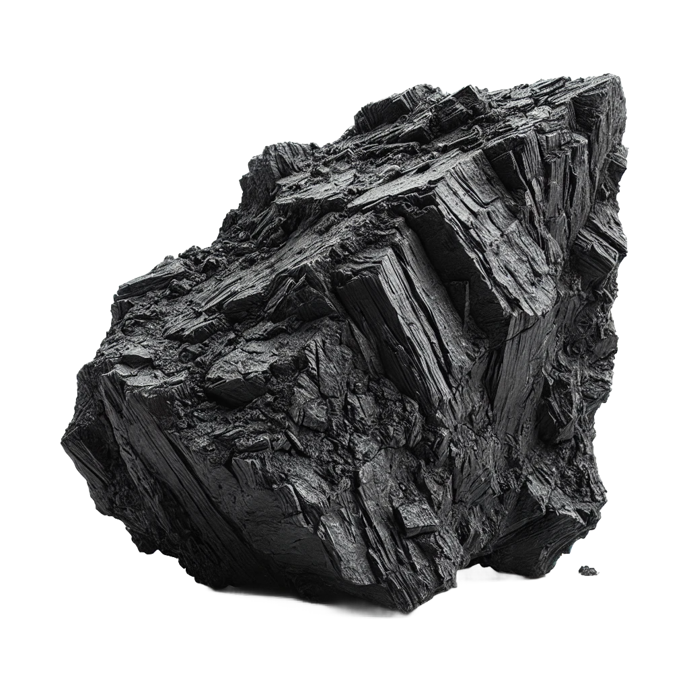

WHAT IS CARBON??
Carbon plays a fundamental role in sustaining life on Earth and influencing various processes that are vital to our environment and economy. Here are key aspects of its importance:
- Building Block of Life
- Is the foundation of all known life forms. It is found in every living organism, forming the backbone of organic molecules such as proteins, carbohydrates, lipids, and DNA.
- The versatility of carbon atoms allows them to form complex and stable structures, which are crucial for the development of cells and tissues.
- Photosynthesis and Energy
- absorb carbon dioxide (CO₂) from the atmosphere during photosynthesis. This process not only removes CO₂ from the atmosphere but also produces oxygen and organic compounds like glucose, which fuels almost all life forms.
- These carbon-based compounds (carbohydrates) store energy, which animals and humans consume for energy through cellular respiration.
- Global Carbon Cycle
- Carbon cycles through the atmosphere, oceans, soil, and living organisms in a continuous process called the carbon cycle.
- The balance of this cycle regulates Earth’s climate, and any disturbance—like excessive carbon emissions from human activity—affects global temperatures, leading to climate change.
- Carbon as a Fuel
- Fossil Fuels: Carbon in the form of coal, oil, and natural gas provides a significant portion of the world’s energy. These fuels are the result of ancient organic matter that has been subjected to heat and pressure over millions of years.
- Biofuels: Biomass-based fuels, derived from carbon in plants, are renewable alternatives that help reduce reliance on fossil fuels.
- Industrial and Economic Importance
- Carbon compounds like graphite, diamonds, and carbon fibers are crucial in industries. Diamonds are used in jewelry and cutting tools, while graphite is essential in batteries, lubricants, and as a material for high-strength composites.
- In the modern economy, carbon-based materials like plastics, chemicals, and pharmaceuticals are essential in manufacturing, infrastructure, and consumer products.
- Climate Change and Carbon Emissions
- Greenhouse Gases: Carbon dioxide (CO₂) and methane (CH₄) are greenhouse gases that trap heat in the Earth’s atmosphere. Increased carbon emissions from human activities, like burning fossil fuels and deforestation, lead to rising temperatures and global warming.
- Managing carbon emissions is essential to mitigating climate change, and efforts like carbon sequestration (capturing and storing CO₂) and switching to renewable energy sources aim to reduce the carbon footprint.
- Carbon in the Oceans
- The oceans absorb a large amount of CO₂ from the atmosphere, helping to regulate global temperatures. However, the increase in carbon levels is leading to ocean acidification, which affects marine life, particularly organisms like corals and shellfish.
- In conclusion, carbon’s versatility and its role in life processes, energy, industry, and the environment make it an indispensable element. However, balancing its natural cycle and reducing carbon emissions are critical to addressing global challenges like climate change
